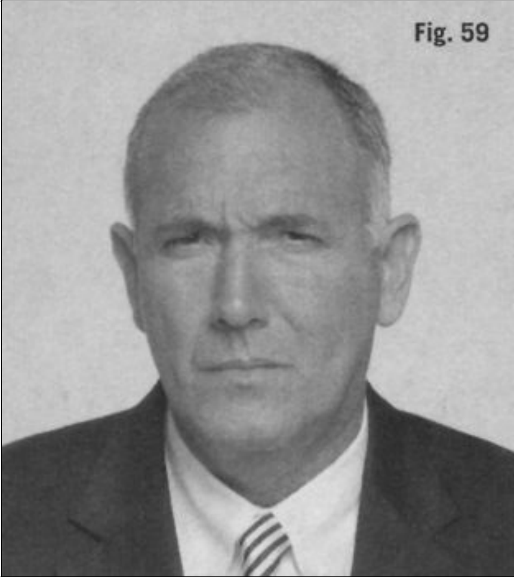
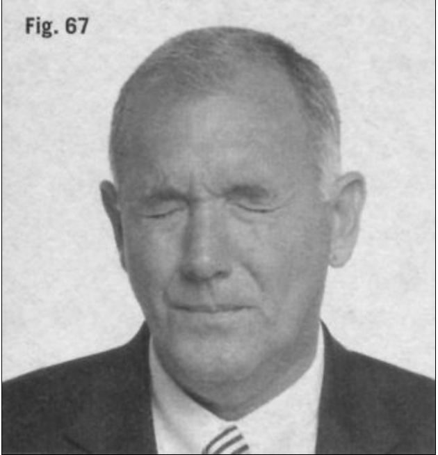
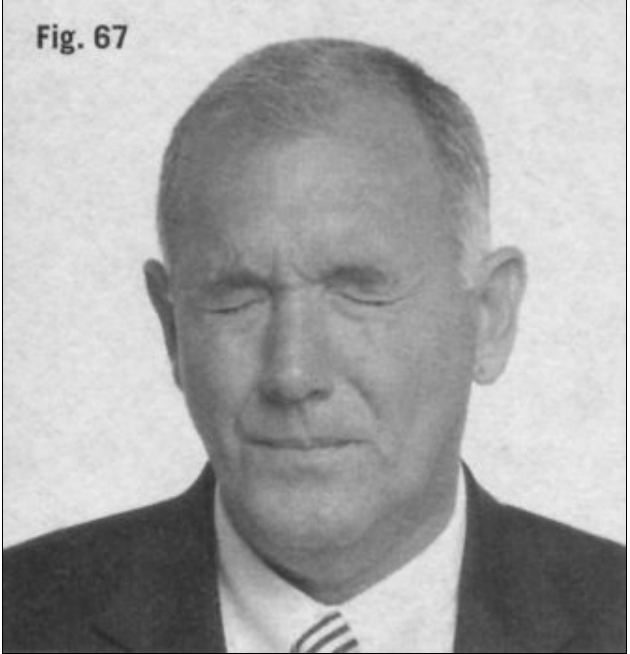
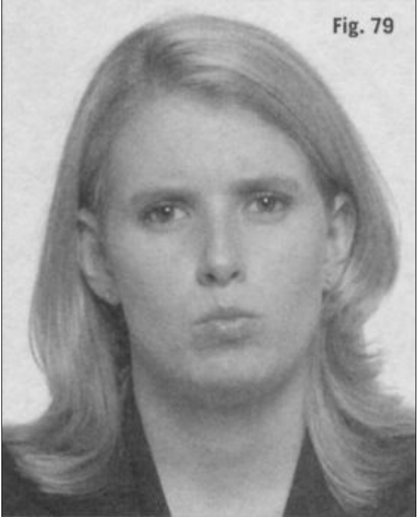

Los gestos no verbales de la cara
En lo referente a las emociones, nuestras caras son el lienzo de la mente. Loque sentimos se comunica de manera exquisita a través de una sonrisa, unfruncimiento de ceño o innumerables matices intermedios. Ésta es unabendición evolutiva que nos diferencia de todas las demás especies y nosconvierte en los animales más expresivos de este planeta
Nuestras expresiones faciales, más que ninguna otra cosa, nos sirven delenguaje universal, son nuestra lengua vehicular transcultural humana, ya seaaquí (sea donde sea «aquí» para ti) o en Borneo. Este lenguaje internacionalha funcionado como un práctico medio de comunicación desde el nacimientodel hombre para facilitar la comprensión entre personas que no comparten unmismo idioma.
Cuando observamos a los demás, podemos saber rápidamente si alguienparece sorprendido, interesado, aburrido, fatigado, inquieto o frustrado.Podemos mirar las caras de nuestros amigos y saber cuándo están molestos,dubitativos, satisfechos, angustiados, decepcionados, incrédulos opreocupados. Las expresiones de los niños nos permiten ver si se sienten tristes, excitados, perplejos o nerviosos. Nunca nadie nos enseñó a generar otraducir estos comportamientos faciales y, sin embargo, todos los conocemos,los realizamos, los adoptamos y nos comunicamos a través de ellos.
Los rostros humanos, con toda su diversidad de músculos que controlancon precisión la boca, los labios, los ojos, la nariz, la frente y la mandíbula,están ampliamente dotados para producir una inmensa variedad deexpresiones. Se calcula que los humanos son capaces de mostrar más de diezmil expresiones faciales diferentes (Ekman, 2003, 14-15).
Esta versatilidad hace que los gestos del rostro resulten extremadamenteefectivos, y, además, cuando nada interfiere, son bastante sinceros. Lafelicidad, la tristeza, la ira, el miedo, la sorpresa, el asco, la alegría, la rabia,la vergüenza, la angustia y el interés son expresiones faciales universalmentereconocidas (Ekman, 2003, 1-37). El malestar, ya sea en el rostro de un bebé,un niño, un adolescente, un adulto o un anciano, se reconoce en todo elplaneta; asimismo, podemos distinguir las expresiones que nos hacen saberque todo va bien.
Aunque nuestra cara puede ser muy sincera a la hora de mostrar cómo nossentimos, no siempre representa necesariamente nuestros verdaderossentimientos. Esto es debido a que nosotros podemos, hasta cierto punto,controlar nuestras expresiones faciales y, por tanto, mostrar una falsafachada. Desde pequeños, nuestros padres nos enseñan a no poner mala caracuando no nos gusta la comida que tenemos delante, o nos vemos obligados afingir una sonrisa cuando saludamos a alguien que no nos agrada.Básicamente, nos enseñan a mentir con la cara, y por eso nos convertimos enexpertos a la hora de ocultar con el rostro nuestros verdaderos sentimientos,aunque de vez en cuando se filtren.
Cuando mentimos usando la cara, a menudo se nos dice que actuamos;obviamente, los buenos actores pueden adoptar un gran número de expresiones faciales para crear emociones ficticias según sea necesario. Pordesgracia, mucha gente, sobre todo los estafadores y otros depredadoressociales más peligrosos, pueden hacer lo mismo. Pueden poner una cara falsacuando están mintiendo, conspirando o intentando influir en la percepción delos demás con sonrisas falsas, miedos fingidos o miradas engañosas.
Aun así, las expresiones faciales pueden proporcionar informaciónsignificativa sobre lo que una persona piensa o siente. Simplemente, tenemosque ser conscientes de que estas señales pueden fingirse, así que la mejorevidencia de un sentimiento verdadero procede de las agrupaciones de gestos,incluyendo pistas corporales y faciales, que se apoyan o se complementanmutuamente. Evaluando las expresiones faciales en su contexto ycomparándolas con otros comportamientos no verbales, podemos usarlas paraaveriguar lo que el cerebro está procesando, sintiendo o pretendiendo. Dadoque el cerebro tiende a usar todo lo que se halla por encima de los hombroscomo un único lienzo para la expresión y la comunicación, voy a referirme ala cara y a su manto, el cuello, como una sola cosa: nuestra cara pública.
MUESTRAS EMOCIONALES POSITIVAS YNEGATIVAS DE LA CARA
Las emociones negativas, como disgusto, asco, antipatía, miedo e ira, nosponen tensos. Esta tensión se manifiesta de muchas formas en el cuerpo.Nuestras caras pueden mostrar simultáneamente una constelación deindicadores que revelen tensión: tensión de los músculos de la mandíbula,ensanchamiento (dilatación) de las aletas nasales, ojos entornados, temblor dela boca u oclusión de los labios (en la cual los labios parecen desaparecer). Siobservas con detenimiento, notarás que los ojos están enfocados en un puntofijo, el cuello permanece rígido y la cabeza no se encuentra inclinada. Unindividuo puede que no comente nada sobre el hecho de que está tenso, perosi se producen estas manifestaciones, no hay duda de que se siente disgustadoy de que su cerebro está procesando algo emocional y negativo. Estosindicadores emocionales negativos son comunes en todo el mundo, y esrealmente valioso buscarlos.
Cuando alguien está disgustado, podrán presentarse todos o bien sólo unoscuantos de estos comportamientos no verbales, manifestándose de un modosuave y fugaz, o bien agudo y pronunciado, con una duración de variosminutos o incluso más. Piensa en Clint Eastwood en los viejos spaghettiwestern, mirando con los ojos entornados a sus oponentes antes de un tiroteo.Esa mirada lo decía todo. Por supuesto, los actores están entrenados parahacer que sus expresiones faciales sean particularmente fáciles de reconocer.Sin embargo, en el mundo real, estos indicadores no verbales a veces son másdifíciles de identificar, bien porque son sutiles, intencionadamente confusos osimplemente se pasan por alto.
Considera, por ejemplo, la mandíbula tensa como una indicación detensión. Tras una reunión de negocios, un ejecutivo puede decir a un colega:«¿Has visto lo tensa que tenía Bill la mandíbula cuando le he hecho lapropuesta?». Sólo para oír que su compañero le responde: «No, no me hedado cuenta de eso» (ver recuadro 45). Nos perdemos indicadores facialesporque se nos ha enseñado a no mirar atentamente o porque nosconcentramos más en lo que se dice que en cómo se dice.
Ten en cuenta que la gente a menudo se esfuerza por ocultar susemociones, haciéndolas más difíciles de detectar, si no somos unosobservadores concienzudos. Además, los indicadores faciales pueden ser tanfugaces (microgestos) que son difíciles de captar. En una conversacióninformal, estos comportamientos sutiles quizá no sean muy significativos,pero en una importante interacción interpersonal (entre amantes, padres ehijos, socios de negocios o en una entrevista de trabajo) dichas muestras detensión, aparentemente sin importancia, pueden reflejar un profundo conflictoemocional. Dado que nuestro cerebro consciente posiblemente tratará deocultar las emociones límbicas, es crucial detectar cualquier señal que lleguea la superficie, porque probablemente ofrecerá una imagen más precisa de lospensamientos e intenciones más arraigados de la persona.
Aunque muchas expresiones faciales alegres son fácil y universalmentereconocidas, estos indicios no verbales también pueden contenerse uocultarse por una gran variedad de motivos, haciéndolos difíciles de detectar.Por ejemplo, está claro que no deseamos mostrar euforia cuando nos repartenuna potente mano de cartas en una partida de póquer, o seguramente noquerremos que nuestros colegas sepan que hemos recibido una prima mayorque ellos. Aprendemos a intentar ocultar nuestra alegría y entusiasmo encircunstancias en las que consideramos poco prudente revelar nuestra buenasuerte. No obstante, al igual que en el caso de los indicadores corporalesnegativos, pueden detectarse gestos no verbales positivos sutiles y contenidosmediante una cuidadosa observación y evaluación de otros comportamientossutiles. Por ejemplo, nuestra cara puede filtrar una punzada de excitación quepor sí misma seguramente no sería suficiente para convencer a un observadorastuto de que somos verdaderamente felices. Sin embargo, nuestros piespodrían proporcionar una evidencia adicional corroborativa de excitación,ayudando a confirmar así la sospecha de que la emoción positiva es auténtica(ver recuadro 46).
Los sentimientos de felicidad auténticos y desenfrenados se reflejan en lacara y en el cuello. Las emociones positivas se revelan porque se suavizan lasarrugas de la frente, se relajan los músculos alrededor de la boca, los labios sevuelven más carnosos (no están comprimidos ni tensos) y se agranda el área de los ojos debido a la relajación de los músculos que los rodean. Cuandoestamos sosegados y cómodos, los músculos faciales también se relajan y lacabeza se inclina hacia un lado, exponiendo nuestra zona más vulnerable, elcuello. Ésta es una muestra de gran bienestar, a menudoobservada durante el noviazgo, que es casi imposible fingir cuando estamosincómodos, tensos, recelosos o nos sentimos amenazados (ver recuadro 47).
INTERPRETACIÓN DE LOSCOMPORTAMIENTOS NO VERBALES DE LOSOJOS
A los ojos se los llama el espejo del alma, así que parece apropiadoexaminar estos dos portales en busca de mensajes no verbales de emociones opensamientos. A pesar de las letras de canciones que dicen cosas como «tusojos mentirosos» (your lyin’ eyes, de los Eagles), nuestros ojos realmenteexpresan mucha información útil. De hecho, pueden ser unos barómetrosmuy precisos de nuestros sentimientos porque, hasta cierto punto, tenemosmuy poco control sobre ellos. A diferencia de otras partes de la cara, que sonmucho menos reflejas en sus movimientos, los músculos del interior y dealrededor de los ojos han evolucionado para protegerlos de peligros. Porejemplo, ciertos músculos del interior del globo ocular protegen de la luzexcesiva a los delicados receptores contrayendo la pupila, y los de alrededorde los ojos los cerrarán inmediatamente si se aproxima un objeto peligroso.Estas respuestas automáticas hacen de los ojos una parte muy sincera denuestra cara, así que examinemos algunos de sus comportamientosespecíficos que nos pueden ayudar a hacernos una idea de lo que la gentepiensa o de cómo pretende actuar.
La contracción de la pupila y el hecho de entornar los ojoscomo forma de bloqueo visual
Las investigaciones han mostrado que, una vez que pasamos la respuestade la sorpresa, cuando vemos algo que nos gusta, nuestras pupilas se dilatan,y se contraen cuando no nos gusta. (Hess, 1975a; Hess,1975b). No tenemos control consciente sobre nuestras pupilas y éstasresponden tanto a estímulos externos (por ejemplo, cambios en la luz) como aestímulos internos (pensamientos) en fracciones de segundo. Debido a que laspupilas son pequeñas y difíciles de ver, especialmente en ojos oscuros, ydado que cambian de tamaño rápidamente, las reacciones de las pupilas noson fáciles de observar. Aunque estos movimientos de los ojos son muyútiles, la gente a menudo no los busca, los ignora o, cuando los ve, subestimasu utilidad a la hora de evaluar las preferencias de una persona.
Cuando nos excitamos, nos sorprendemos o tenemos que hacer frente aalgo de repente, nuestros ojos se abren de par en par. Y no sólo lo hacen másde lo normal, sino que las pupilas se dilatan rápidamente para dejar que entreel máximo de luz disponible, enviando así la mayor cantidad de información visual al cerebro. Obviamente, esta respuesta de sorpresa la hemos usadodurante milenios. Sin embargo, en cuanto tenemos un momento para procesarla información y si ésta se percibe como negativa (en caso de sorpresadesagradable o verdadera amenaza), en una fracción de segundo las pupilasse contraerán (Ekman, 2003, 151) (ver recuadro 48). Al contraer las pupilas,todo ante nosotros queda enfocado con precisión, de forma que podemos verclara y perfectamente para defendernos o escapar con éxito (Nolte, 1999,431-432). Esto es muy similar a como funciona la abertura de una cámara:cuanto más pequeña es la abertura, mayor la distancia focal, y másclaramente enfocado estará todo ya se encuentre cerca o lejos. A propósito, sialguna vez necesitas unas gafas de lectura de emergencia y no tienesningunas a mano, haz un pequeño agujerito en un trozo de papel y sujétalo ala altura del ojo; hará que enfoques lo que estás leyendo. Si la constricciónmáxima de las pupilas no es suficiente, entornamos los ojos para hacer laabertura lo más pequeña posible al tiempo que los protegemos.

Hace unos años, caminaba con mi hija cuando pasamos junto a alguien queella reconoció. Cuando entornó los ojos levemente mientras saludaba a lachica sin apenas levantar la mano, sospeché que algo negativo había ocurridoentre ellas, así que le pregunté a mi hija de qué conocía a la chica. Merespondió que era una compañera del instituto con la que había tenido en elpasado unas palabras. El saludo con la mano bajada lo hizo por convenciónsocial; sin embargo, el gesto de entornar los ojos era una delatora y sinceramuestra de emociones negativas y de disgusto (siete años en gestación). Mihija no fue consciente de que el gesto de entornar los ojos había revelado susverdaderos sentimientos hacia la chica, aunque esa información resaltó comola luz de un faro para mi.
Este mismo fenómeno se observa en el mundo de los negocios. Cuando uncliente, de repente, entorna los ojos mientras lee un contrato, puede que tengadificultades con algo relacionado con la redacción del texto. Aunque elmalestar o la duda se registran inmediatamente en sus ojos, lo más probablees que sus socios de negocios ignoren por completo que están transmitiendoeste mensaje tan claro de desacuerdo o disgusto.
Además de entornar los ojos cuando están molestos, algunos individuosbajarán las cejas tras observar algo inquietante en su entorno. Unas cejasarqueadas indican gran confianza y sentimientos positivos (uncomportamiento que desafía la gravedad), mientras que unas cejas bajadas,normalmente, son un gesto de poca confianza y de sentimientos negativos, uncomportamiento que indica debilidad e inseguridad en una persona (verrecuadro 49).
El bloqueo visual o cómo el cerebro se da un respiro
Nuestros ojos, más extraordinarios que cualquier cámara, hanevolucionado como el principal medio receptor de información de los humanos. En realidad, a menudo intentamos censurar los datos entrantes através de un mecanismo límbico de supervivencia conocido como el bloqueovisual, que evolucionó para proteger al cerebro e impedir que éste «viera»imágenes no deseadas. Cualquier disminución en el tamaño de los ojos, yasea por el gesto de entornarlos o por la contracción de la pupila, es una formade comportamiento de bloqueo inconsciente. Y todos los comportamientos debloqueo son indicadores de preocupación, disgusto, desacuerdo o percepciónde una posible amenaza.
Las muchas formas que adopta el bloqueo visual son una parte tan comúny natural de nuestro repertorio no verbal que la mayoría de la gente las pasatotalmente por alto o ignora su significado. Porejemplo, piensa en un momento en el que alguien te dio una mala noticia.Quizá tú no te diste cuenta, pero lo más probable es que, cuando escuchastela información, tus párpados se cerraran durante unos pocos segundos. Estetipo de comportamiento de bloqueo tiene un origen muy antiguo y estáprogramado en nuestro cerebro. Incluso los bebés, de un modo innato,bloquean los ojos en el útero cuando se enfrentan a sonidos fuertes. Y todavíamás asombroso es el hecho de que los niños que nacen ciegos se cubran losojos cuando escuchan una mala noticia (Knapp y Hall, 2002, 42-52). A lolargo de nuestras vidas, empleamos este comportamiento de bloqueoimpulsado por el cerebro límbico cuando oímos algo terrible, a pesar de queasí no bloqueamos ni nuestros oídos ni los pensamientos que siguen. Quizá,simplemente, sirve para dar al cerebro un respiro temporal o para comunicarnuestros más profundos sentimientos. Sea cual sea el motivo, el cerebro sigueforzándonos a adoptar este comportamiento.
 

El bloqueo visual presenta muchas formas y puede observarse en cualquieracontecimiento trágico, ya sea porque se nos transmite una mala noticia oporque una tragedia está a punto de ocurrirnos. La gente se cubre porcompleto ambos ojos con una mano ahuecada, pone una mano abierta sobrecada ojo, o bloquea toda la cara con un objeto, como puede ser un periódico oun libro. Incluso la información interna, bajo la forma de un pensamiento,puede forzar esta respuesta. Una persona que, de repente, recuerda que olvidó algo importante, seguramente, cerrará los ojos por un instante y respiraráprofundamente mientras reflexiona sobre su error.
Interpretados en contexto, los comportamientos de bloqueo visual puedenser poderosos indicadores de los pensamientos y sentimientos de una persona.Estas pistas de distanciamiento aparecen al instante, en cuanto se escuchaalgo negativo. En una conversación, son una de las mejores señales paraindicarnos que algo que se ha dicho no ha sentado bien a la otra persona.
En mi trabajo con el FBI he usado repetidas veces el comportamiento delbloqueo visual. El asesinato con el «punzón para picar hielo» y el incendio enel hotel de Puerto Rico, comentados anteriormente, son sólo dos de losmuchos ejemplos en los que he sido testigo de la importancia de estecomportamiento ocular. Y sigo pendiente de él a diario para valorar lossentimientos y los pensamientos de los demás.
Aunque los comportamientos de bloqueo visual a menudo se asocian conver o escuchar algo negativo que provoca nuestro malestar, también puedenser un indicativo de poca confianza. Al igual que la mayoría de los demásindicios, la respuesta del bloqueo visual es de lo más fiable y valiosa cuandosucede inmediatamente después de un acontecimiento significativo que túpuedas identificar. Si se produce un bloqueo visual justo después de que ledes a una persona una información específica o al hacer algún tipo de oferta,esto debería indicarte que algo va mal y que el individuo está preocupado. Apartir de ahí, quizá quieras replantearte cómo deseas proceder si tu objetivoes mejorar tus posibilidades de éxito con esa persona.
Dilatación pupilar, arqueo de las cejas y ojos como platos
Hay gran cantidad de comportamientos oculares que muestransentimientos positivos. Ya desde una edad muy temprana, nuestros ojos registran bienestar cuando vemos a nuestras madres. Un bebé empezará aseguir el rostro de su madre a partir de las setenta y dos horas de sunacimiento, y sus ojos se abrirán más cuando ella entre en la habitación,demostrando interés y satisfacción. La afectuosa madre los abrirá de un modorelajado, y el bebé la mirará a los ojos y se consolará con ella. Los ojos muyabiertos son un signo positivo; indican que alguien está observando algo quele hace sentirse bien.
Al contrario de la contracción pupilar, la satisfacción y las emocionespositivas se muestran a través de la dilatación de las pupilas. El cerebro estádiciendo básicamente: «Me gusta lo que veo, ¡déjame que lo vea mejor!».Cuando la gente se alegra verdaderamente de lo que ve, no sólo sus pupilas sedilatan, sino que sus cejas se elevan (se arquean), ampliando la zona de losojos y haciendo que parezcan más grande. (Knapp yHall, 2002, 62-64). Además, algunas personas amplían exageradamente laapertura de sus ojos y los abren lo máximo posible, creando así el conocidogesto de ojos como platos. Se trata de una mirada con los ojos muy abiertos,normalmente asociada con la sorpresa o los acontecimientos positivos (verrecuadro 50). Ésta es también otra forma que adoptan los comportamientosque desafían la gravedad, por lo común asociados con buenos sentimientos.

Ojos brillantes
Una variante de los ojos como platos es el arqueo de cejas o el brillo de losojos,que se produce rápidamente y de un modo muy repentino durante unacontecimiento emotivo positivo. Este comportamiento no sólo esuniversalmente reconocido como indicador de una sorpresa agradable (piensaen alguien que llega a una fiesta sorpresa), sino que también se usa paraenfatizar y mostrar intensidad. Es muy común ver a la gente diciendo: «¡Vaya!», al tiempo que arquea las cejas con los ojos brillantes. Ésta es unamuestra positiva muy sincera. Cuando alguien está resaltando algo ocontando una historia con entusiasmo, debería arquear las cejas. Este gestorefleja el verdadero estado de ánimo del individuo y también despeja elcamino para una mayor claridad visual.
Quizá la mayor utilidad del arqueo de cejas se obtiene cuando percibimosque alguien deja de hacer este gesto mientras cuenta una historia. A menudo,cuando no estamos emocionalmente vinculados con lo que decimos, no hayénfasis ocular. Esta falta de vinculación observada podría reflejarsimplemente menor interés o bien producirse porque lo que se dice no esverdad. Distinguir estas causas es difícil; esencialmente, lo único que puedeshacer es mantenerte pendiente de una disminución del arqueo de cejas, o desu repentina ausencia, para saber que algo ha cambiado. Es sorprendente lafrecuencia con que la gente cambia su énfasis facial (los movimientos rápidosde sus cejas) cuando se va sintiendo cada vez menos vinculada con lo quedice o hace.
Comportamiento de la mirada
El hecho de que cuando miramos directamente a los demás es porque noscaen bien, sentimos curiosidad por ellos o queremos amenazarlos, es algouniversal. Las parejas se miran directamente a los ojos con mucha frecuencia,al igual que las madres y los hijos; pero también lo hacen los depredadores,que usan una mirada directa para cautivar o amenazar (piensa en laspenetrantes miradas de Ted Bundy y Charles Manson). En otras palabras, elcerebro emplea un único comportamiento visual, una potente mirada, paracomunicar amor, interés u odio. Por tanto, debemos contar con otras muestrasfaciales que acompañen al comportamiento de la mirada para determinaragrado (una sonrisa relajada) o desagrado (mandíbulas tensas, labiosapretados).
En cambio, cuando apartamos la mirada durante una conversación,tendemos a hacerlo para pensar con más claridad, sin la distracción de mirar ala persona con la que hablamos. Este comportamiento a menudo se confunde con una grosería o con un rechazo personal. Tampoco es un signo de engañoo desinterés; en realidad, es una muestra de bienestar (Vrij, 2003, 88-89).Cuando hablamos con amigos, normalmente miramos a la distancia mientrasconversamos. Hacemos esto porque nos sentimos lo bastante a gusto comopara hacerlo; el cerebro límbico no detecta ninguna amenaza procedente deesa persona. No supongas que alguien miente, no está interesado o se sientedisgustado porque aparte la mirada. A menudo, podemos pensar con másclaridad cuando miramos a la distancia y ésa es la razón por la que lohacemos
Hay muchas otras razones que explican que apartemos la mirada dealguien que está hablando. Si se dirige hacia abajo, puede mostrar queestamos procesando un sentimiento o una emoción, llevando a cabo undiálogo interno, o quizá mostrando sumisión. En muchas culturas, se esperaque se baje la mirada, o que se realice otra forma de evasión visual, ante laautoridad o en presencia de individuos de estatus alto. A menudo se enseña alos niños a hacerlo con humildad cuando un padre o un adulto los regaña(Johnson, 2007, 277-290). En situaciones embarazosas, los espectadoresapartarán la mirada por cortesía. Así que nunca supongas que el hecho de quese baje la mirada es un signo de engaño.
En todas las culturas, la ciencia confirma que aquellos que son dominantestienen más libertad a la hora de usar el comportamiento de la mirada. Enesencia, estos individuos tienen derecho a mirar hacia donde quieran. Sinembargo, los subordinados tienen más limitados los lugares hacia dondepueden mirar y cuándo pueden hacerlo. La humildad establece que, enpresencia de la realeza, al igual que en la iglesia, se mantenga la cabezaagachada. Por regla general, los dominantes tienden a ignorar visualmente alos subordinados, mientras que éstos tienden a mirar a aquéllos desde ladistancia. En otras palabras, los individuos de estatus alto pueden mantenerse indiferentes, mientras que a las personas de estatus más bajo se les exige quepermanezcan atentos con la mirada. El rey es libre de mirar a quien quiera,pero todos los súbditos encaran al rey, incluso mientras salen de la estancia.
Muchos empresarios me han comentado que no les gusta que, durante unaentrevista de trabajo, los candidatos a un puesto en su empresa recorran laestancia con la mirada «como si fueran los dueños del lugar». Debido a quevagar con la mirada hace que una persona parezca no interesada o superior, silo haces, dejarás una mala impresión. Incluso si el motivo es porque estásintentando averiguar si te gustaría o no trabajar allí, probablemente nuncatendrás esa oportunidad si tus ojos no se enfocan en la persona que te habladurante la entrevista
El parpadeo/El pestañeo
El ritmo de nuestro parpadeo aumenta cuando estamos excitados,preocupados, nerviosos o inquietos, y vuelve a la normalidad cuando estamosrelajados. Una serie de parpadeos rápidos puede reflejar una lucha interna.Por ejemplo, si alguien dice algo que no nos gusta, pestañearemos.Asimismo, también lo haremos si tenemos dificultades para expresarnos enuna conversación (ver recuadro 51). El pestañeo indica claramente quetenemos alguna dificultad con nuestra actuación, o con la entrega oaceptación de información. El actor británico Hugh Grant quizá sea el actorque más usa el pestañeo para comunicar que se siente turbado, desconcertado,que se está esforzando o que tiene problemas.
Los estudiantes de comunicación no verbal a menudo se fijan en cómo elritmo del parpadeo del presidente Richard Nixon aumentó cuando dio sudiscurso de «no soy un delincuente» tras salir a la luz el escándalo Watergate.El hecho es que la frecuencia del parpadeo probablemente aumentará en cualquiera que esté bajo tensión, tanto si miente como si no. Examiné elritmo del parpadeo del presidente Bill Clinton durante su famosa declaracióny éste era cinco veces más rápido que el habitual en él como resultado de latensión a la que estaba sometido. Aunque es tentador hacerlo, yo memostraría muy reacio a etiquetar a alguien de mentiroso simplemente porqueel ritmo de su parpadeo aumente, ya que cualquier tensión, como la quegenera el hecho de que se te hagan preguntas en público, puede hacer que elritmo aumente.
Mirar con recelo
Mirar con recelo a los demás es un comportamiento que se lleva a cabocon la cabeza y los ojo. Una mirada de reojo o un breve gestode poner los ojos en blanco pueden ir acompañados de un movimiento paraladear la cabeza. Mirar con recelo es un comportamiento que se observacuando sospechamos de otros o cuestionamos la validez de lo que estándiciendo. A veces, esta señal corporal es muy rápida; en otras ocasiones,puede ser casi sarcásticamente exagerada y durar todo un encuentro. Aunqueeste gesto no verbal es más de curiosidad y recelo que irrespetuoso, esbastante fácil de percibir su mensaje como: «Te estoy escuchando pero no metrago lo que estás diciendo, al menos no todavía».

COMPRENDIENDO LOSCOMPORTAMIENTOS NO VERBALES DE LABOCA
Al igual que los ojos, la boca proporciona un número de indiciosrelativamente fiables y dignos de mención que te pueden ayudar arelacionarte más eficazmente con la gente. Al igual que los ojos, la bocatambién puede ser manipulada por el cerebro pensante para emitir falsasseñales, así que debes tener cuidado cuando la interpretes. Dicho esto, aquí tepresento algunos puntos centrales de interés en referencia al lenguaje corporalde la boca.
Una sonrisa falsa y una sonrisa verdadera
Es bien conocido por los investigadores que los humanos tenemos unasonrisa verdadera y otra falsa (Ekman, 2003, 205-207). La sonrisa falsa seusa casi como una obligación social hacia aquellos que no son cercanos anosotros, mientras que la verdadera se reserva para aquellas personas yacontecimientos que verdaderamente nos importan (ver recuadro 52).
La sonrisa verdadera aparece principalmente debido a la acción de dosmúsculos: el zigomático mayor (Zygomaticus major), que se extiende desdela comisura de los labios hasta el pómulo, y el músculo orbicular de lospárpados (orbicularis oculi), que rodea al ojo. Cuando trabajan juntosbilateralmente, hacen que las comisuras de los labios suban y que se arruguenlos bordes externos de los ojos, produciendo las típicas patas de gallo de unafamiliar sonrisa cálida y sincera.
Cuando exhibimos una sonrisa falsa o social, la comisura de los labios seestira hacia los lados a través de un músculo llamado risorio (risorius).Cuando se usa bilateralmente, tira de las comisuras hacia los lados, pero nopuede elevarlas hacia arriba, como sucede en el caso de la verdadera sonrisa. Curiosamente, los bebés de varias semanas de vida yareservan la amplia sonrisa zigomática para sus madres y usan la sonrisarisoria para todos los demás. Si no eres feliz, es poco probable que puedassonreír usando los músculos zigomáticos mayores y los orbiculares de lospárpados. Las sonrisas verdaderas son difíciles de fingir cuando hay ausenciade emoción sincera.
Labios que desaparecen, compresión de los labios y la Uinvertida
El hecho de que nos dé la impresión de que los labios han desaparecido detodas las fotografías en las que aparece cualquier persona declarando ante elCongreso se debe a la tensión. Lo digo porque, en lo referente a la tensión(como la que se siente al declarar ante el Congreso), nada es más universalque unos labios que desaparecen. Cuando estamos estresados, tendemosinconscientemente a hacer que nuestros labios se oculten.
Cuando apretamos los labios, es como si nuestro cerebro límbico nosestuviera diciendo que nos callemos y como si no permitiera que nada entraraen nuestro cuerpo. porque, en ese momento, estamosagobiados por graves problemas. La compresión de los labios es un buenindicador de verdaderos sentimientos negativos y puede manifestarsebastante intensamente en el momento en que el sentimiento aparece (verrecuadro 53). Es un claro signo de que la persona está preocupada y de quealgo va mal. Rara vez, si alguna, tiene una connotación positiva. Sinembargo, esto no significa que la persona esté mintiendo. Simplemente indicaque se encuentra bajo tensión en ese momento.
En la siguiente serie de fotografías demuestrocómo los labios pasan progresivamente de estar llenos (las cosas van bien) adesaparecer o comprimirse (las cosas no van bien). Fíjate especialmente en laúltima fotografía, en cómo la comisura se tuerce hacia abajo,haciendo que la boca parezca una U invertida. Este comportamiento esindicativo de mucha angustia (malestar). Se trata de un indicio o señalextraordinario de que la persona está sintiendo mucha tensión.
En mis clases (puede que quieras intentarlo con tus amigos), pido a losalumnos que hagan desaparecer los labios o los compriman y que se mirenlos unos a los otros. Enseguida se dan cuenta de que pueden hacerdesaparecer los labios, pero normalmente éstos forman una línea recta. La mayoría de la gente que lo intenta no puede hacer que las comisuras de laboca se muevan hacia abajo en forma de U invertida. ¿Por qué? Porque setrata de una respuesta límbica difícil de simular a menos que estemosrealmente bajo tensión o afligidos. Ten esto presente porque, para algunaspersonas, el gesto de las comisuras hacia abajo es un comportamiento normaly, como tal, no es un signo preciso de angustia. Sin embargo, para la granmayoría de nosotros, es un indicio muy preciso de pensamientos osentimientos negativos.
El fruncimiento de labios
No olvides buscar a individuos que frunzan los labios cuando tú o alguienmás esté hablando. Este comportamiento a menudo significaque no están de acuerdo con lo que se está diciendo o que están considerandoun pensamiento o idea alternativa. El hecho de conocer esta informaciónpuede ser muy valioso para ti y ayudarte a determinar cómo presentar tu caso,modificar tu oferta o guiar la conversación. Para averiguar si el fruncimientode los labios significa desacuerdo o consideración de un punto de vistaalternativo, deberás seguir analizando el progreso de la conversación parapoder reunir pistas adicionales.
Durante las alegaciones finales de un juicio, a menudo se puede observareste gesto. Cuando un abogado habla, su colega fruncirá los labios endesacuerdo. Los jueces también lo hacen si no están de acuerdo con losabogados, cuando éstos se acercan al estrado para hablar con ellos enprivado. Durante la revisión de contratos, percibir un fruncimiento de labiospuede ayudar a los letrados a descifrar las preocupaciones y problemas quetiene el abogado de la otra parte. También puede verse este gesto durante losinterrogatorios policiales, sobre todo cuando se presenta a un sospechoso la información incorrecta. El sospechoso fruncirá los labios en señal dedesacuerdo porque sabe que el investigador se equivoca con los hechos.
En situaciones de negocios, se producen fruncimientos de labiosconstantemente, y esto debería considerarse un medio eficaz para recabarinformación sobre una situación. Por ejemplo, cuando se lee un determinadopárrafo de un contrato, aquellos que se oponen a un punto o frase enparticular fruncirán los labios en cuanto éste se mencione. O, cuando senombra a los candidatos a un ascenso, verás cómo alguien frunce los labioscuando el nombre de alguien menos deseable se menciona.
Este gesto es tan preciso que realmente debería prestársele más atención.Aparece en numerosas situaciones y circunstancias, y es un indicador muyfiable de que la persona no comparte una opinión o rechaza por completo loque se dice.
La expresión desdeñosa
Las expresiones desdeñosas, como poner los ojos en blanco, son un acto dedesdén universal. Esta expresión es irrespetuosa y refleja una ausencia decomprensión o empatía por parte de la persona que adopta dicho gesto.Cuando lo adoptamos, los músculos buccinadores (buccinator), en loslaterales de la cara, se contraen para echar las comisuras de los labios hacialas orejas y crear un hoyuelo en las mejillas. Esta expresión es muy visible ysignificativa aunque sea fugaz y dure sólo un instante. Puedeser muy reveladora en lo referente a lo que está sucediendo en la mente deuna persona y lo que puede augurar (ver recuadro 54).
Manifestaciones de la lengua
Hay numerosas señales de la lengua que pueden proporcionarnos valiososconocimientos sobre los pensamientos y el estado de ánimo de una persona.Cuando estamos bajo tensión, se nos seca la boca, por lo que es normal quenos pasemos la lengua por los labios para humedecerlos. También, enmomentos de malestar, tendemos a pasar la lengua por los labios paraapaciguarnos y calmarnos. Podemos sacar la lengua (normalmente por unlado) cuando nos concentramos diligentemente en una tarea (por ejemplo,cuando el gran jugador de baloncesto Michael Jordan salta para hacer unmate), o también para contrariar a alguien que no nos gusta o para mostrarasco (los niños lo hacen constantemente).
Cuando un individuo manifiesta otros indicios con la boca asociados con latensión, como morderse o lamerse el labio, tocarse la boca o morder unobjeto, refuerza aún más la creencia en el cuidadoso observador de que lapersona se siente insegura Además, si la gente se toca loslabios o pasa la lengua por ellos mientras considera sus opciones, sobre todocuando invierte una inusual cantidad de tiempo en ello, está mostrando signosde inseguridad.
El comportamiento de sacar la lengua mordiéndola se ha mencionadoanteriormente como un gesto usado por la gente cuando cree que se ha salidocon la suya o cuando ha sido sorprendida haciendo algo. He visto estecomportamiento en mercadillos, tanto en Estados Unidos como en Rusia,entre los vendedores callejeros del bajo Manhattan, en las mesas de póquer deLas Vegas, durante interrogatorios en el FBI y en reuniones de negocios. Entodos los casos, la persona hace el gesto, sacando la lengua entre los dientessin tocar los labios, cuando se llega a algún tipo de acuerdo o comoafirmación no verbal final. Esto, en cierto modo, es uncomportamiento transaccional. Parece mostrarse de forma inconsciente alfinal de las interacciones sociales y tiene una gran variedad de significadosque deben tomarse en contexto. Entre sus diversos significados están: me hanpillado, estoy entusiasmado, me he salido con la mía, he hecho algo estúpidoo soy malo.
Precisamente hoy, cuando revisaba algunas notas para este libro, elempleado de la cafetería de la universidad colocó las verduras equivocadas enla bandeja del alumno que estaba delante de mí. Cuando el alumno se locomentó para que corrigiera el error, el empleado sacó la lengua entre losdientes y encogió los hombros como diciendo: «Vaya, me he equivocado».
En las discusiones sociales o de negocios, este gesto de la lenguanormalmente se ve al final de la conversación, cuando la persona siente que se ha salido con la suya y la otra parte no ha logrado detectarlo o seguir conel tema. Si ves este gesto, pregúntate qué acaba de suceder. Piensa en si haspodido ser engañado o timado, o si tú o alguien más ha cometido un error.Ése es el momento de valorar si alguien te está engañando.
Frente arrugada
El gesto de fruncir el ceño, arrugando la frente (y las cejas), normalmenteaparece cuando alguien está nervioso, triste, concentrado, preocupado,desconcertado o enfadado. Este comportamiento tiene queexaminarse en contexto para determinar su verdadero significado. Unejemplo de ello es una cajera de un supermercado, a la que vi cerrando lacaja, que fruncía el ceño mientras contaba el efectivo. Se podía ver laintensidad y la concentración de su expresión, mientras intentaba cuadrar lostotales al final de su turno. El mismo fruncimiento de ceño puede observarseen alguien que acaba de ser detenido y es guiado a través de la multitud deperiodistas. La frente arrugada normalmente está presente cuando alguien seencuentra en una situación insostenible o desagradable sin poder escapar deella; ésta es la razón por la que este gesto se ve en las fotos de las fichaspoliciales de los detenidos.
Por cierto, este comportamiento de fruncir el ceño es tan antiguo y comúnpara los mamíferos que incluso los perros lo reconocerán. Los propios perrospueden exhibir una expresión similar cuando están nerviosos, tristes oconcentrados. Otro hecho interesante en referencia al ceño fruncido es que, amedida que nos hacemos mayores y aumentan nuestras experiencias en lavida, nuestra frente desarrolla surcos cada vez más profundos que finalmentese convierten en arrugas permanentes. Al igual que pueden salir arrugas de lasonrisa por toda una vida de gestos no verbales positivos que indican una vida feliz, una persona con una frente arrugada probablemente haya tenidouna vida difícil en la que a menudo ha fruncido el ceño.
Dilatación de las aletas nasales (ensanchamiento de la nariz)
Como se ha comentado previamente, el ensanchamiento de las fosasnasales es un indicador facial que señala que una persona está excitada. Amenudo puede verse a las parejas rondándose el uno al otro con las fosasnasales sutilmente ensanchadas por la excitación y la anticipación. Lo másprobable es que los amantes adopten este comportamiento subconscientemientras absorben las fragancias de la atracción sexual del otro, conocidascomo feromonas (Givens, 2005, 191-208). El ensanchamiento de la nariz estambién un potente indicador de la intención de hacer algo físico, y nonecesariamente sexual. Puede ser cualquier cosa, por ejemplo prepararse parasubir unas escaleras empinadas o para mover una estantería. Cuando la gentese dispone a actuar físicamente, se oxigena, lo cual provoca que se ensanchenlas fosas nasales.
Como agente del orden público, si me encuentro con una persona en lacalle que mira hacia abajo, tiene los pies en posición de salida o en «posiciónpugilística» y la nariz ensanchada, sospecho que probablemente se estépreparando para hacer una de estas tres cosas: discutir, correr o pelear. Ladilatación de las aletas nasales es algo a lo que siempre deberías estar atentosi te encuentras cerca de alguien que puede tener razones para atacarte o huirde ti. Es uno de los muchos comportamientos sospechosos de los quedeberíamos enseñar a nuestros hijos a estar pendientes. De ese modo, seríanmás conscientes de cuándo una persona puede llegar a ser peligrosa, sobretodo en el colegio o en los parques.
Morderse las uñas y signos de tensión relacionados
Si ves a alguien mordiéndose las uñas mientras espera a cerrar un trato,probablemente no te impresione por su seguridad en sí mismo. El hecho demorderse las uñas es una indicación de tensión, inseguridad o malestar.Cuando lo observes durante una sesión de negociación, aunque sólo sea porun momento, puedes dar por hecho que quien lo hace se siente inseguro de símismo o está negociando desde una posición de debilidad. Tanto en lasentrevistas de trabajo como en las citas, deberíamos evitar mordernos lasuñas, no sólo porque es antiestético, sino también porque este gesto estádiciendo a gritos: «Me siento inseguro». Nos mordemos las uñas no porquenecesitemos recortárnoslas, sino más bien porque nos apacigua.
Rubor y palidez facial
A veces nos ruborizamos o palidecemos involuntariamente a causa deprofundos estados emocionales. Para mostrar el comportamiento del rubor enmis clases, hago que un alumno se levante delante del grupo y, luego, meacerco por detrás y me pego a su nuca. Normalmente, esta violación de suespacio es suficiente para provocar una respuesta límbica que hace que lesuba el rubor a la cara. En algunas personas, sobre todo en los individuos depiel clara, esto puede ser muy perceptible. La gente también se ruborizacuando la pillan haciendo algo que sabe que está mal y, además, existe elrubor que aparece cuando a una persona le gusta alguien, pero no quiere quelo sepa. Los adolescentes que están secretamente enamorados de alguien amenudo se ruborizan cuando esa persona en particular se acerca. Ésta es unaverdadera respuesta límbica que se transmite por el cuerpo y resultarelativamente fácil de observar.
Por el contrario, podemos palidecer cuando experimentamos esaprolongada reacción límbica conocida como shock. He visto a personasperder el color del rostro a consecuencia de un accidente de tráfico o en uninterrogatorio en el que al sospechoso se le presentaban pruebas aplastantesde su culpabilidad. La palidez se produce cuando el sistema nerviosoinvoluntario toma el control de todos los vasos superficiales y canaliza lasangre hacia nuestros músculos más grandes a fin de prepararse para escaparo atacar. Conozco al menos un caso en que el individuo se sorprendió tantode ser detenido que, de repente, palideció y sufrió un ataque mortal decorazón. Aunque estos sucesos se dan sólo en la piel, no deberíamosignorarlos, ya que son indicadores de una gran tensión y se presentarán de unmodo diferente dependiendo de la naturaleza y la duración de lascircunstancias.
Indicadores de desaprobación mediante expresiones faciales
Los indicadores de desaprobación varían en todo el mundo y son un reflejode las normas sociales específicas de cada cultura. En Rusia, algunaspersonas me han mirado con desdén sólo porque silbaba mientras recorría elpasillo de un museo de arte. Parece ser que, en ese país, silbar en sitioscerrados es algo inadmisible. En cierta ocasión, en Montevideo, el grupo enel que me encontraba fue sancionado con unos ojos entornados seguidos deun giro desdeñoso del rostro porque estábamos hablando demasiado alto y alas gentes del lugar no les gustaba nuestro bullicioso humor. En EstadosUnidos, al tratarse de un país tan grande y con tanta diversidad, cada regióntiene sus propias muestras de desaprobación; las del Medio Oeste difieren delas de Nueva Inglaterra o Nueva York.
La mayoría de los gestos de desaprobación se manifiestan en la cara y seencuentran entre los primeros mensajes que aprendemos de nuestros padres yhermanos. Aquellos que nos cuidan nos pondrán «esa cara» para hacernossaber si estamos haciendo algo mal o nos pasamos de la raya. Mi padre, quees muy estoico, tenía «esa mirada» más que controlada; lo único que teníaque hacer era mirarme severamente y con eso bastaba. Era una mirada queincluso mis amigos temían. Jamás tuvo que censurarnos verbalmente.Simplemente nos lanzaba esa mirada inconfundible y con eso era suficiente.
En general, somos bastante expertos a la hora de comprender losindicadores de desaprobación, aunque a veces pueden llegar a ser muy sutiles(ver recuadro 55). Reconocer la censura es esencial para aprender las normasy convenciones no escritas de un país o región, ya que aquella se nostransmite cuando las hemos transgredido. Estas señales nos ayudan a sabercuándo estamos siendo groseros. Las muestras de desaprobación o censura nomerecidas o inapropiadas, sin embargo, son igualmente groseras. Un gesto noverbal de desaprobación que se ve con demasiada frecuencia en EstadosUnidos es poner los ojos en blanco. Éste es un signo de falta de respeto y nodebe tolerarse, sobre todo por parte de subordinados, empleados o niños.
Las manifestaciones faciales de repugnancia o desaprobación son muysinceras y reflejan perfectamente lo que está sucediendo en el cerebro. Larepugnancia se muestra principalmente en la cara porque ésta es la parte denuestra anatomía que se ha ido adaptando, a lo largo de millones de años,para rechazar comida estropeada o cualquier otra cosa que pueda hacernosdaño. Aunque estas manifestaciones faciales pueden ser desde débiles hastaobvias, el sentimiento es el mismo, ya sea cuando nos enfrentamos a unainformación negativa o desagradable, o cuando probamos comida mala. «Nome gusta esto, alejadlo de mí.» No importa lo leve que sea la mueca o lamirada de repugnancia o disgusto, a la hora de interpretar estos comportamientos podemos estar seguros de su veracidad porque estángobernados por el sistema límbico.
COMPORTAMIENTOS DE LA CARA QUEDESAFÍAN LA GRAVEDAD
El viejo dicho «mantén la cabeza alta» es un comentario dirigido a alguienque está abatido o que sufre alguna desgracia steretazo de sabiduría popular refleja con precisión nuestra respuesta límbica ala adversidad. En general, cuando una persona ve a otra con la cabezaagachada, creerá que se halla falta de confianza y que está experimentandosentimientos negativos, mientras que si la ve con la cabeza alta, consideraráque tiene un estado de ánimo positivo.
Lo que es cierto para la cabeza también es cierto para la nariz. Un gesto enel que alcemos el apéndice nasal, desafiando la gravedad, es un indicio noverbal de gran confianza, mientras que una posición baja es una muestra depoca confianza. Cuando la gente se encuentra bajo tensión o disgustada, lacabeza (y la nariz) tiende a no estar alta. El gesto de bajar la cabeza es unaforma de retirada o distanciamiento, y puede ser muy preciso a la hora dediscernir verdaderos sentimientos negativos.
En Europa, en particular, se puede observar a menudo estecomportamiento, sobre todo el de levantar la nariz para mirar por encima delhombro a aquellos de clase más baja o para desairar a alguien. En ciertaocasión en que me hallaba de viaje en el extranjero, estaba viendo latelevisión francesa y me fijé en cómo un político, cuando se le hacía unapregunta que él consideraba inapropiada, se limitaba a levantar la nariz, mirarpor encima del hombro al periodista y responder: «No contestaré a eso». Lanariz reflejaba su estatus y su actitud de desprecio hacia el periodista. Charlesde Gaulle, un individuo bastante complejo que finalmente se convirtió en elpresidente de Francia, era famoso por proyectar este tipo de actitud e imagenaltiva.
La regla de las señales mezcladas
A veces no decimos lo que realmente estamos pensando, pero nuestrascaras lo reflejan igualmente. Por ejemplo, alguien que mira de manerareiterada su reloj o la salida más cercana te está haciendo saber que llegatarde, tiene una cita o preferiría estar en otro lugar. Este tipo de mirada es unindicador de intención
Otras veces, decimos una cosa, pero realmente pensamos otra. Esto noslleva a hablar de una regla general en lo referente a interpretar emociones opalabras observando las expresiones faciales. Si nos enfrentamos a señalesmezcladas en el rostro (como pueden ser indicadores de felicidad junto aseñales de inquietud, o comportamientos de placer junto a muestras dedisgusto), o si los mensajes faciales no verbales y verbales no están deacuerdo, piensa siempre que la emoción negativa será la más sincera de lasdos. El sentimiento negativo casi siempre será el más preciso y auténtico delos sentimientos y emociones de la persona. Por ejemplo, si alguien dice:«Qué alegría verte», con las mandíbulas tensas, la afirmación es falsa. Latensión en el rostro revela la verdadera emoción que la persona está sintiendo.¿Por qué ponerte del lado de la emoción negativa? Porque nuestra reacciónmás inmediata hacia una situación desagradable normalmente es la másexacta; es sólo después, cuando nos damos cuenta de que otros puedenvernos, cuando ocultamos esa respuesta inicial con algún comportamientofacial socialmente más aceptable. Así que, cuando te enfrentes a ambos,quédate con la primera emoción observada, sobre todo si es una emociónnegativa.
CONCLUSIONES SOBRE LA CARA
Debido a que el rostro puede comunicar tantas expresiones diferentes y aque se nos enseña a ocultar nuestras manifestaciones faciales ya desdepequeños, cualquier cosa que observes en él debería compararse con losgestos no verbales del resto del cuerpo. Además, como los gestos indicadoresde la cara son tan complejos, puede resultar difícil interpretar si reflejanbienestar o malestar. Si estás confundido respecto al significado de unaexpresión facial, recréala y piensa en cómo te hace sentir. Este pequeño trucopuede ayudarte a descifrar lo que acabas de observar. La cara revela una grancantidad de información, pero también puede inducir a error. Tienes quebuscar agrupaciones de comportamientos, evaluar constantemente lo que vesen contexto y fijarte en si la expresión facial concuerda o contrasta con lasseñales de otras partes del cuerpo. Sólo llevando a cabo todas estasobservaciones podrás confirmar con seguridad tu evaluación de lasemociones y las intenciones de una persona.